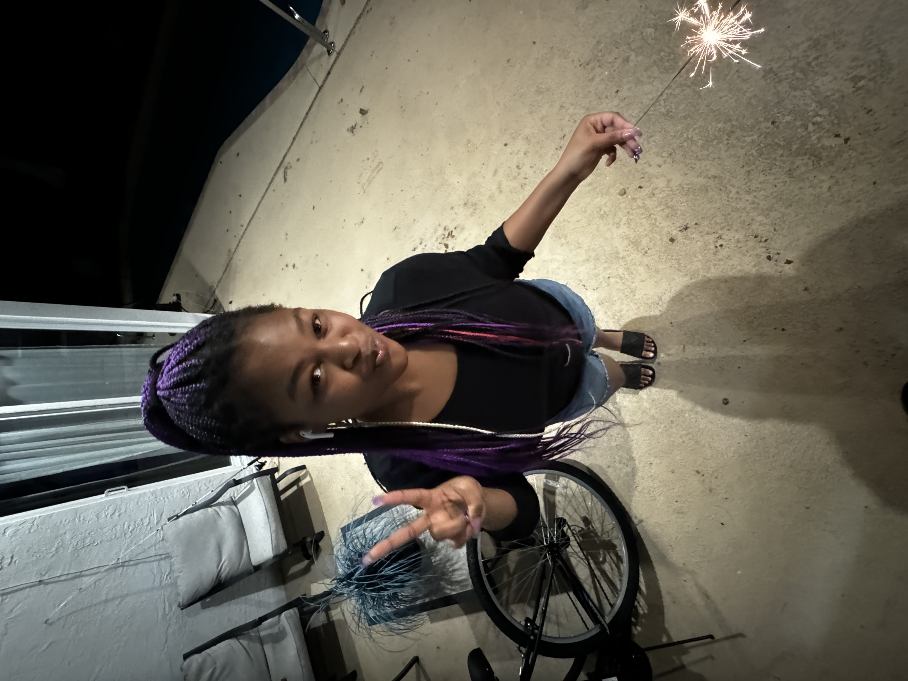

Jaime Milton

Summary
Hi my name is Jaime Milton. I am hardworking and dedicated and I just started coding with html this year. Although I have little experience I am determined to learn and grow throught this school year.
Education
- I attended Forest Glen Middle School, where I earned 5 credit points. I now attend Pompano Beach Highschool where I learning html
Work Experience
-
Volenteering at Forest Glen
June 2024- August 2024
- Helped around the classroom for teachers
- Tutored students
- Graded Papers
Skills
- Microsoft word⭐⭐⭐⭐
- html coding⭐⭐
- Word⭐⭐⭐⭐⭐
Awards and Certifications
- Student of the month/year (2020)
Other
- My hobbies
- Contact me